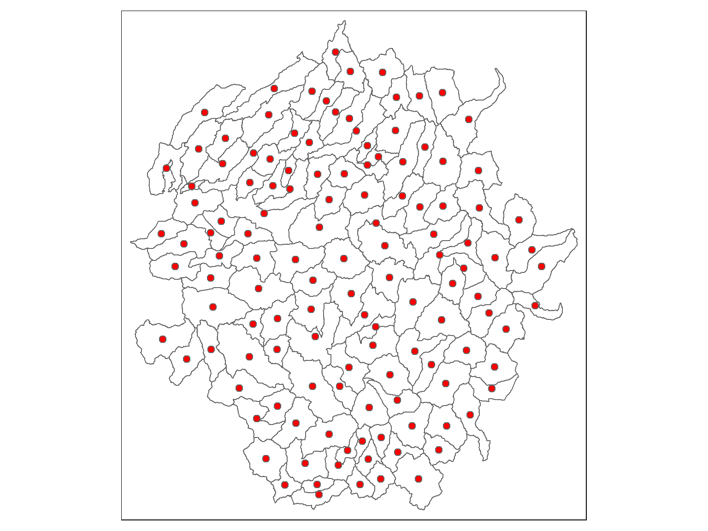
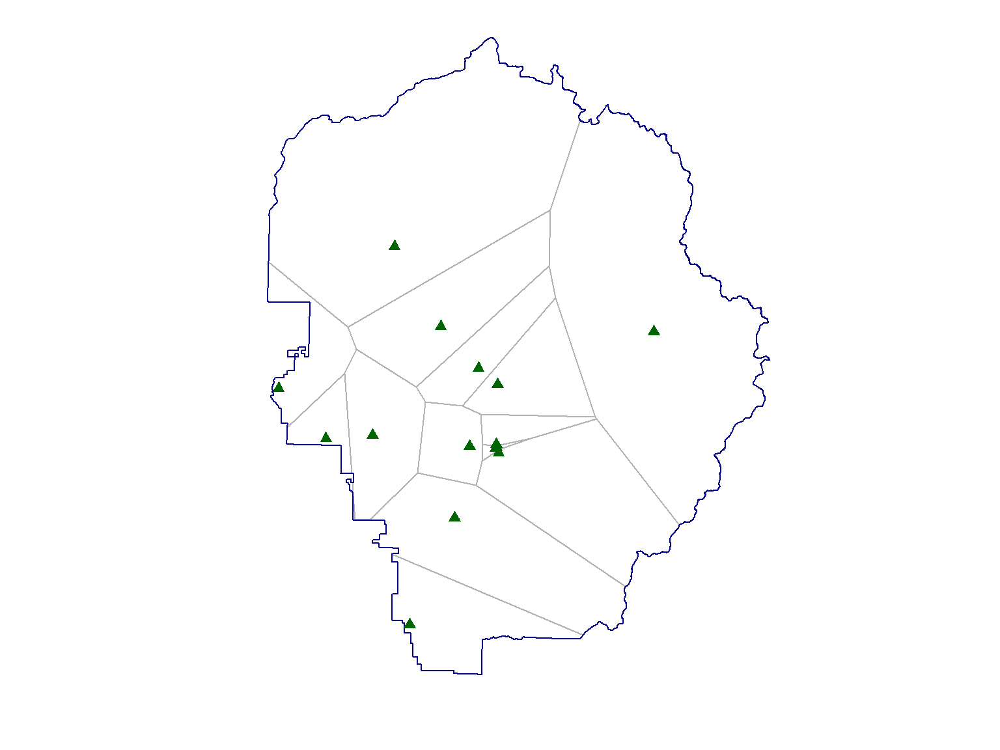

Spatial Data Analysis with R
BayGeo, Spring 2021
Geoprocessing
Geoprocessing
Open nb_geoproc_01.Rmd
First, import the watersheds:
## Import watersheds
gpkg_watershd_fn <- "./data/yose_watersheds.gpkg"
file.exists(gpkg_watershd_fn)
yose_watersheds <- st_read(gpkg_watershd_fn, layer="calw221")
## Plot it
plot(st_geometry(yose_watersheds), axes=TRUE)
Next, compute the centroids:
yose_watersheds_ctr <- yose_watersheds %>% st_centroid()
## Plot it
tm_shape(yose_watersheds) + tm_borders() +
tm_shape(yose_watersheds_ctr) + tm_symbols(size=0.3, col="red")
Let’s put a 1km buffer around each of the campgrounds.
First import the campgrounds (which are part of the yose_poi Shapefile):
## Import and project the campgrounds
yose_campgrnds_utm <- st_read(dsn="./data", layer="yose_poi") %>%
dplyr::filter(POITYPE == 'Campground') %>%
dplyr::select(POINAME) %>%
st_transform(epsg_utm11n_nad83)Next, buffer them (remember the buffer distance should be in map units):
## Create the 1km buffer
yose_campgrnds_buff <- st_buffer(yose_campgrnds_utm, dist=1000)
## Plot
tm_shape(yose_bnd_utm) +
tm_borders() +
tm_shape(yose_campgrnds_buff) +
tm_polygons(col="red") +
tm_layout(title="1km buffer around campgrounds",
title.bg.color="white") +
tm_scale_bar(position = c("right", "bottom"))
Other functions take two input layers and combine them in different ways.
| Function | Computes |
|---|---|
| st_union() | union of several geometries |
| st_intersection() | intersection of pairs of geometries |
| st_difference() | difference between pairs of geometries |
| st_sym_difference() | symmetric difference (xor, union w/o intersection) |
Union all the burn scars for 1980s. What was the total area burned?
First we pull out all the fires for the 1980s:
## Extract fire scars from the 1980s
yose_fires_80s <- yose_firepolys_utm %>% filter(YEAR >= 1980 & YEAR <=1989)
nrow(yose_fires_80s)
## Plot them
plot(yose_bnd_utm %>% st_geometry(), col=NA, border="red")
plot(yose_fires_80s %>% st_geometry(), col=NA, border="gray50", add=TRUE)## [1] 767
Next we union the polygons and compute the area.
## Union the polygons (to remove overlapping polygons)
yose_fires_80s_union <- yose_fires_80s %>% st_union()
plot(yose_bnd_utm %>% st_geometry(), col=NA, border="red")
plot(yose_fires_80s_union %>% st_geometry(), col="gray80", border="gray60", add=TRUE)
## Compute the total area, displying the units in square miles
yose_fires_80s_union %>% st_area() %>% set_units(mi2)## 87.66586 [mi2]Find the total area burned during the 1990s.
[Solution]
Sometimes you may get a typology error caused by a self-intersecting polygon or something similar. You can repair some types of typology errors with st_make_valid() from the lwgeom package.
Run the following code and you will probably get an error message because one of the fire polygons for the 2000s has a self-intersecton. Un-comment the the st_make_valid() line and try again.
Open nb_geoproc_02.Rmd
For a given a set of points, Voronoi tesselation computes a network of polygons, such that each polygon contains exactly one point and everywhere within a polygon is closest to the enclosed point.

Let’s build Voronoi polygons for the campgrounds. These polygons could be thought of as the ‘catchment area’ of each campgrounds, if campgrounds were like magnets trying to attract campers.
We can create a Voronoi tessellation using st_voronoi(). Note st_voronoi() expects a single multipart point feature, which you can create from a point layer using st_union().
## Compute Voronoi polygons
v <- st_voronoi(st_union(yose_campgrnds_utm))
## Construct polygon sf and simplify (i.e., break multipart into single features)
v_sf <- st_sf(v) %>% st_cast()
## Plot
plot(v_sf %>% st_geometry() , col = NA, border="gray70")
plot(yose_bnd_utm %>% st_geometry(), add=TRUE, col=NA, border="darkblue")
plot(yose_campgrnds_utm %>% st_geometry(), col="darkgreen", cex=1, pch=17, add=T)
Modify the above so the Voronoi polygons are clipped to the park boundary.
[Solution]
## Clip to the park boundary
v_clipped <- v_sf %>% st_intersection(yose_bnd_utm)
plot(v_clipped %>% st_geometry() , col = NA, border="gray70")
plot(yose_bnd_utm %>% st_geometry(), add=TRUE, col=NA, border="darkblue")
plot(yose_campgrnds_utm %>% st_geometry(), col="darkgreen", cex=1, pch=17, add=T)
Create Voronoi polygons for the cell tower infrastructure